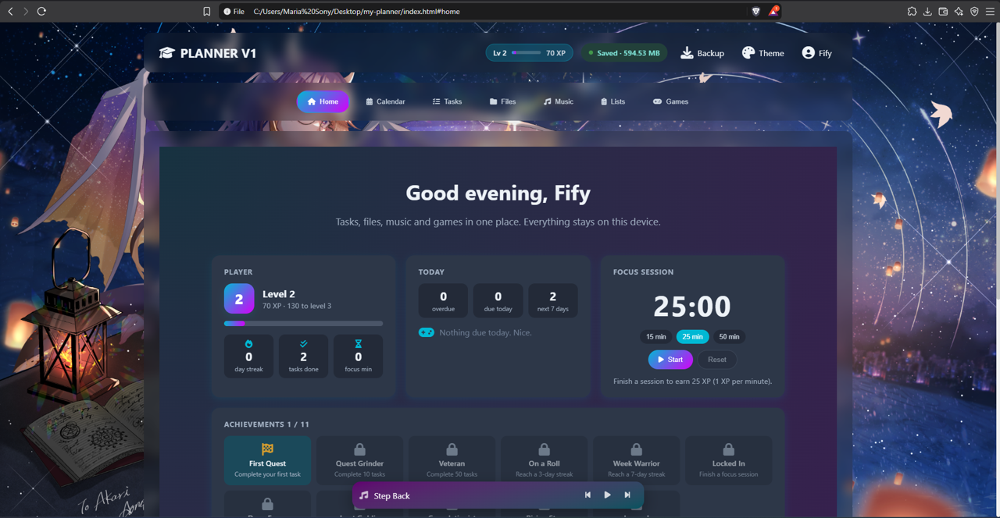
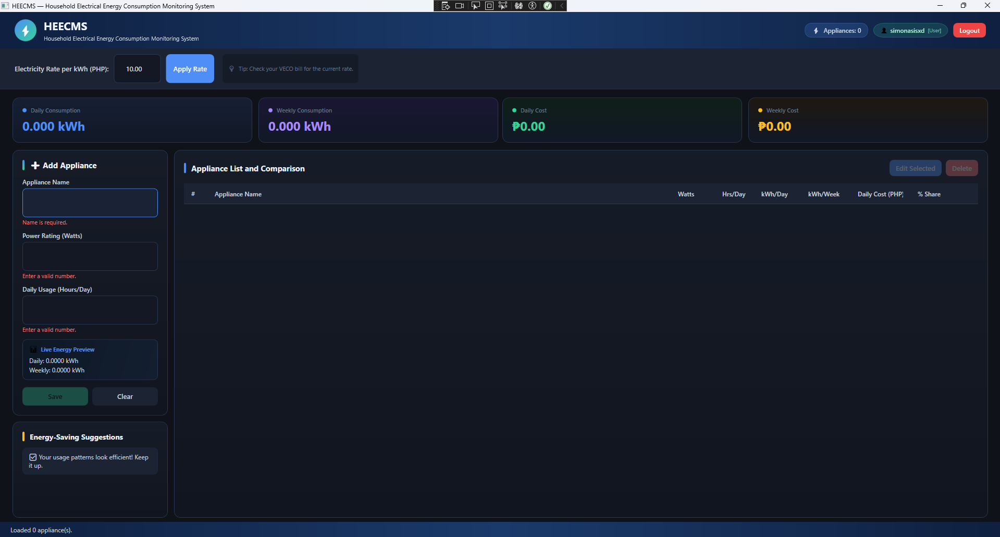

Web
- HTML, CSS, JavaScript
- Browser localStorage apps
- Flask (Python) basics
Hello, I'm
4th-year IT student at Cebu Eastern College, Cebu City. I'm learning backend development and project management, and I like building tools that are useful to real people.
Currently interested in: backend development, applied machine learning, assistive technology, and keeping a team's project organized.
I'm a graduating Information Technology student in Cebu City, Philippines. In my capstone group I work as the Backend Developer and Project Manager, so I split my time between writing server-side code and keeping documents, sprints, and deadlines on track.
Before and alongside school, I worked as a freelance Customer Service Virtual Assistant on Upwork. That taught me to communicate clearly, respond reliably, and handle people's concerns patiently, skills I now use when working with my team.
An honest look at where I am right now: comfortable working knowledge still learning
 SuriGulat
SuriGulat
An ambient sound-to-visual and haptic alert system that helps people with hearing loss notice important sounds at home, such as alarms or doorbells. A sensor picks up the sound, a relay forwards it, and the user's phone shows a visual alert and vibrates. It is aligned with SDG 10 (Reduced Inequalities) and designed to run on existing hardware using only open-source tools.
My contribution: Backend developer and project manager: server design (Flask and Flask-SocketIO relay, SQLite storage), sprint planning, and chapter documentation.
Status: in development for our capstone defense.

Task ManagerA browser-based planner for school tasks, deadlines and files. Everything is saved in the browser's localStorage so changes persist after closing the page. I am reworking it into a more personal app with a music player and a file viewer for documents, PDFs and photos.
My contribution: Designed and coded the whole app on my own.
Status: being improved.

HEECMSHousehold Electrical Energy Consumption Monitoring System, a Windows desktop app that helps households see where their electricity goes. Users log in, add appliances with their wattage and daily hours of use, and the app calculates daily and weekly kWh, estimated cost in pesos at an adjustable rate per kWh, and each appliance's percentage share of the total. It also gives energy-saving suggestions based on usage patterns, such as long running hours or high-power devices.
My contribution: Built the WPF desktop app using the MVVM pattern, with user login and registration, role-based user management, and SQLite storage through Entity Framework Core.
Status: working version completed.
I'm open to feedback, collaboration, and entry-level opportunities. The best way to reach me is by email.